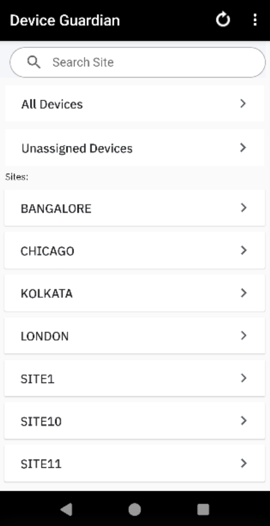
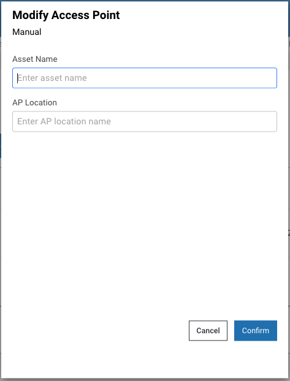
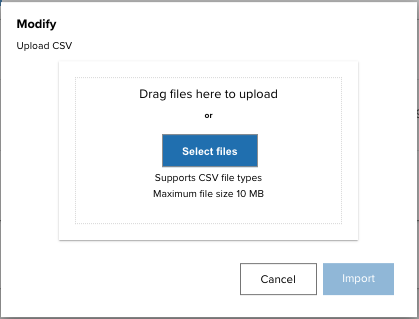
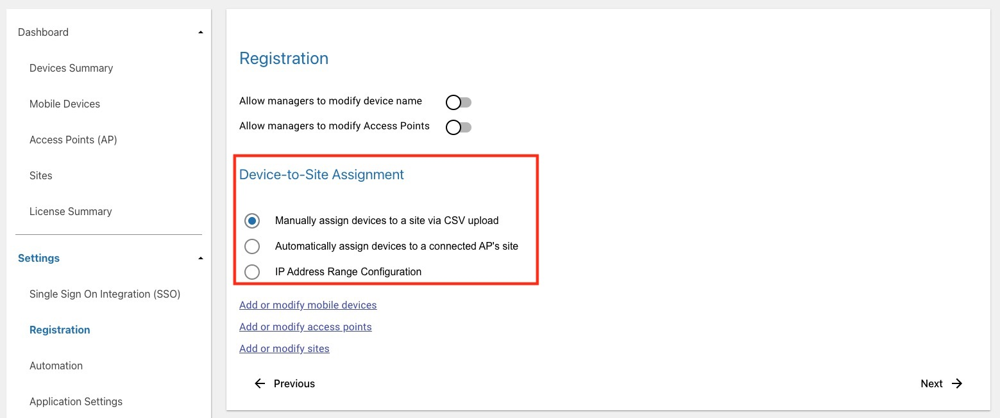
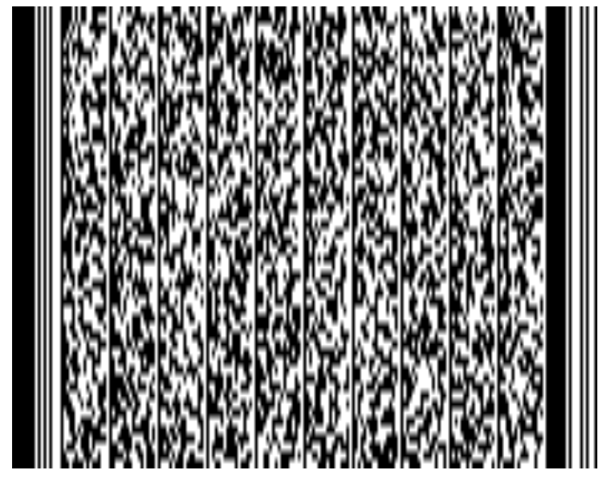

Overview
The Device Guardian web portal empowers administrators to manage devices, access points (APs) and sites, as well as generate reports of managed assets. For Device Guardian to operate, administrators must register devices, access points and sites prior to use. This can be performed manually or by importing data via a .CSV file. The portal also offers additional configuration options such as automation, notifications, map-based location tracking and Bluetooth scanners.
System Parameters:
- Maximum device support: 100,000 devices
- Maximum web portal support: 500 sites and 25,000 devices
- Maximum .CSV import: 25,000 records
Note: Importing .CSV files approaching the 25,000 maximum can require a considerable period of time. To import files more quickly, Zebra recommends importing records in groups of 1,000.
Device Guardian supports three user roles: administrator, manager and user/associate. User functions and capabilities presented by the Device Guardian app vary based on the assigned role:
|  |

|

|
||
|
Administrator View status of devices across all locations |
Manager View status of devices within their location |
User/Associate View missing devices that need to be found |
Note: Secondary Bluetooth Low Energy (BLE) configuration is part of the Install & Setup.
Administrator Role
Administrator functions and capabilities presented through the Device Guardian web portal:
- Administrator dashboard to manage and view assets at the corporate-level and site-level:
- Integrate SSO
- Manage Users
- Manage Sites
- Manage Access Points
- Manage Devices
- Manage Enrollment files
- Configure Manager Access to Modify Devices and/or Access Points (optional)
- Configure Device-to-Site Assignment (optional)
- Configure Workflow Automation (optional)
- Generate Reports (optional)
- Monitor Licenses
- Device dashboard to view devices at the corporate-level
- Site Search
- All Manager and Associate capabilities
Manager Role
Manager functions and capabilities presented through the Device Guardian web portal:
- Manager dashboard to manage (if permitted) and view assets at the site-level:
- Mark a device for retrieval ("To Be Found") (To Be Found)
- Mark a device out of service (decommission) with a note
- Device or AP Search
- All Associate capabilities
User/Associate Role
User/Associate functions and capabilities presented through the Device Guardian web portal:
- View marked devices for retrieval ("To Be Found")
- Find devices using the BLE proximity meter and audio chirp
- Mark devices as found or cannot be found
Single Sign-On (SSO)
Device Guardian integrates with single sign-on (SSO) providers, enabling users to authenticate on devices using their SSO login credentials through Zebra's Identity Guardian. Identity Guardian, which is a separate installation from Device Guardian, manages device access and tracks device custody, ensuring user accountability. SSO integration applies to both web portal and device logins.
Requirements:
- Identity Guardian v2.0 or higher must be installed separately on devices, configured with SSO Authentication Configuration.
Compatible SSO Providers:
- Ping Identity - OAuth 2.0 with PKCE or Mutual-TLS
- Microsoft Entra ID - Client secret or Mutual-TLS
For integration with Mutual-TLS client certificates, refer to Mutual-TLS Certificate Generation & Deployment.
SSO Role-Based Mapping:
- Use SSO Defined Roles - This option automatically transfers role-based mpping from your SSO provider to Device Guardian, eliminating the need to manually create admin and manager roles within Device Guardian.
- Without This Option - Admin and manager roles must be explicitly created in Device Guardian; see Add User.
User Experience Post-SSO Device Login:
- Managers and Administrators - After launching Device Guardian, their respective dashboards are displayed.
- Associate Users - After launching Device Guardian, the Missing screen is displayed.
SSO Behavior Notes:
Simultaneous Logins - If the same SSO credentials are used to log into the web portal in separate web browser instances simultaneously, logging out of one instance prevents renders the other instance non-operational.
First-time login to Chrome - When using Chrome for the first time on the device and attempting to login with SSO, the following steps are required before proceeding:
- Accept the Google Terms of Service.
- Select the desired option when prompted to turn on sync.
If the device is running Android 8, the SSO login page may reappear after a successful loggin. Tap the back button to access the Device Guardian dashboard.
Note: If Identity Guardian is not installed, SSO login will not be functional on devices. However, admins and managers can still login to Device Guardian using their non-SSO credentials.
Mutual-TLS Certificate Generation & Deployment
When ready to activate SSO OAuth 2.0 using Mutual-TLS client certificates, gather the required certificate files and related information:
- Certificate private key (.key file) from the certificate owner
- Certificate password (saved in passphrase.txt) used to generate the private key
- SSL certificate issued by the CA (.p7b file)
- SSL certificate (.pfx file) converted from P7B
- Public certificate (.crt file) generated from PFX format
- Certificate expiration date
Steps to generate the SSL certificates are provided below. After all the certificate information is gathered, contact Zebra technical support to raise a ticket for SSO integration with Device Guardian. Zebra services will request the above information and follow-up with next steps.
To generate the SSL certificates, perform the following:
Create a certificate CER file with the following command:
openssl pkcs7 -print_certs -in ssl_certificate.p7b -out ssl_certificate.cerwhere "ssl_certificate.p7b" is the certificate issued by the CA.
Create an SSL certificate in PFX format using the following command:
openssl pkcs12 -export -in ssl_certificate.cer -inkey private.key -out ssl_certificate.pfxwhere "private.key" is the private key from the certificate owner and "ssl_certificate.cer" is the file generated from step 1. Save the private key password in passphrase.txt. When prompted, enter the certificate password and specify the export password using the same password as the certificate password.
Generate a public certificate in CRT format with command:
Openssl pkcs12 -in ssl_certificate.pfx -clcerts -nokeys -out dtrk_sso_public.crt
Action is required to activate SSO for integration with Device Guardian after Zebra services enables SSO in the cloud server. Only activate SSO when all devices have Device Guardian 5.1 or higher. Follow the SSO integration steps and then create SSO users if role-based mapping is not in use. When SSO is activated, only SSO users can login; non-SSO users cannot login.
SSO Integration
Follow these steps to integrate SSO with Device Guardian - it is important to perform the step to create an SSO user:
- In the browser, launch the Device Guardian web portal using the URL supplied. Login using the super administrator credentials provided by Zebra. Enter the User ID and Password. Click Log In.
- After login, click Settings > Single Sign On Integration (SSO).
- In the SSO Provider dropdown, select the appropriate provider:
- Ping Identity
- Microsoft

- Follow the guide specific to your SSO provider:
For Microsoft:
- Client Authentication Type - Select one of the following based on your SSO authentication:
- Client TLS Certificate - Uses client certificates for mutual authentication and secure communication between a client app and an identity provider.
- Client Secret - Uses a client ID and a client secret to authenticate a client app with an identity provider.
- Authorization Scope - Specifies the permission and access level that an app is requesting from an identity provider on behalf of a user. Use one of the following formats based on your SSO setup:
- Tenant ID followed by “/.default”. For example: “abc123/.default”
- “openid email profile”
- SSO Endpoint URLs - Enter the appropriate information based on the SSO server settings:
- Authorization endpoint
- Token endpoint
- Logout endpoint (known as End Session endpoint)
- User info endpoint
- Map SSO Provided Responses - If using role-based mapping, enter the following information based on your SSO parameters:
- UserID Parameter - An identifier for the user that is configured in SSO and returned from the SSO response upon authenticating the user. This is added as an optional claim under Token Configuration, e.g. “upn”.
- Use SSO Defined Roles - Enable this option to utiltize the roles defined in your SSO system, thereby eliminating the need to manage users through Device Guardian. When enabled, it employs role-based mapping to automatically assign the administrator and manager user roles according to your SSO definitions. If disabled, the admin and manager users must be defined in the Manage Users section.
- Site Location - Site parameter that determines the location or site of the user. For Microsoft Entra ID, navigate to Applications > Enterprise Applications. Search for the server instance and open it. From the menu, click “Single sign-on”. Enter the custom claim from “Attributes & Claims” which maps the user to the specified location (e.g. “Site” which maps to “user.department”).
- Admin Role Parameter - Parameter that identifies whether the user is an admin. Enter the default claim: “roles”.
- Admin Roles - Names of the admin-related roles as specified in App Roles from your SSO provider, which maps to the user profile attribute, e.g., job title.
- Manager Role Parameter - Parameter that identifies whether the user is a manager. Enter the default claim: “roles”.
- Manager Roles - Names of the manager-related roles as specified in App Roles from your SSO provider, which maps to the user profile attribute, e.g. job title.
- Register the web portal by entering the following:
- Client ID - Enter the Application (client) ID.
- Redirect URI - Enter the web portal URL with “/login” appended.
- Click Validate.
For Ping Identity: - Client Authentication Type - Select one of the following based on your SSO authentication:
- None - - If selected, the option Proof Key For Code Exchange is enabled.
- Client TLS Certificate - Uses client certificates for mutual authentication and secure communication between a client app and an identity provider. If selected, the option Proof Key For Code Exchange is disabled.
- Authorization Scope - Specifies the permission and access level that an app is requesting from an identity provider on behalf of a user.
- SSO Endpoint URLs - Enter the appropriate information based on the SSO server settings:
- Authorization endpoint
- Token endpoint
- Introspection
- Revoke endpoint
- Logout endpoint
- User info endpoint
- Map SSO Provided Responses - If using role-based mapping, enter the following information based on your SSO parameters:
- UserID Parameter - An identifier for the user that is configured in SSO and returned from the SSO response upon authenticating the user.
- Use SSO Defined Roles - Enable this option to utiltize the roles defined in your SSO system, thereby eliminating the need to manage users through Device Guardian. When enabled, it employs role-based mapping to automatically assign the administrator and manager user roles according to your SSO definitions. If disabled, the admin and manager users must be defined in the Manage Users section.
- Site Location - Site parameter that determines the location or site of the user.
- Admin Role Parameter - Parameter that identifies whether the user is an admin.
- Admin Roles - Names of the admin-related roles as specified in App Roles from your SSO provider, which maps to the user profile attribute, e.g., job title.
- Manager Role Parameter - Parameter that identifies whether the user is a manager.
- Manager Roles - Names of the manager-related roles as specified in App Roles from your SSO provider, which maps to the user profile attribute, e.g. job title.
- Register the web portal by entering the following:
- Client ID - Enter the Application (client) ID.
- Redirect URI - Enter the web portal URL with “/login” appended.
- Click Validate.
- Client Authentication Type - Select one of the following based on your SSO authentication:
- Make sure pop-up windows are not blocked in the browser. During the validation process, a status window appears followed by a login prompt. It is important to enter your login credentials to complete the validation process.
- When validation is successful, a confirmation prompt appears asking if you would like to activate SSO.
- Click Yes.
- A confirmation message appears indicating successful SSO configuration activation.

- IMPORTANT: The admin must add at least one SSO admin user. See Add SSO User. Otherwise, if the admin logs out before adding the SSO admin user, no admin user can login due to the lack of an SSO admin user registered.
- Sign out from the non-SSO session. In the top right, click on the signout icon.

- The SSO login page appears. Enter the user credentials to login. Click Sign In.
- Click on Settings > Single Sign On Integration (SSO). The SSO Activation Status shows Activated.
Manage Users
User Management (under Admin Settings > User Management) allows administrators and managers to create and manage user accounts, tailored to either SSO or non-SSO access:
- Non-SSO - If SSO is not activated, all administrators and managers are added as non-SSO users. User accounts are managed through User Management in the web portal. An email address must be provided for each user, which serves as their user ID.
- For first-time use as an administrator in non-SSO mode, setting a password is necessary to gain system access and to add additional admins or managers. During onboarding, the primary admin is registered as a user in the system based on their email address. To set a password, open the web portal, click Forgot Your Password, enter the registered email address when prompted, and submit the request. An email will be sent with a link to set the password. After login, additional admins or managers can be added.
- SSO - For environments with SSO activated:
- If Use SSO Defined Roles is enabled, no users need to be manually added. User Management is grayed out in the web portal, as admin/manager users and roles are defined by the SSO.
- If Use SSO Defined Roles is disabled, administrators and managers must be added in the web portal through User Management. The User ID entered must match the user ID provided by the SSO provider.
Important: Although SSO can be deactivated after activation, Zebra recommends maintaining user consistency based on the SSO activation status. If SSO is not activated, only maintain non-SSO users. If SSO is activated, maintain SSO users exclusively.
Notes:
- User accounts for associates are not required.
- Managers must be assigned a site to oversee.

User Management guide
Create User
Steps to create a user:
- Log in to the web portal as an administrator or manager.
- Go to Admin Settings > User Management. Click Create User.
- Enter the necessary information and assign a Role to the user:
- Administrator - Manages devices across all sites and can recover devices; see Administrator Role.
- Manager - Manages devices within their assigned site and can recover devices; see Manager Role.
- Company User - Responsible for device recovery; see User/Associate Role.
- Click one of the following:
- Create - Adds the user without sending an email for password creation, as the user will not need to log in. This is generally intended for the Company User role.
- Create and Activate- Adds a user and sends an email prompting password creation to enable user login. This is required for Administrator and Manager roles.
Create user guide
Search User
Administrators or managers can be searched based on user ID. To search for a user:
- Log in to the web portal as an administrator or manager.
- Go to Admin Settings > User Management.
- In the search field below User Management, enter the user ID to search. Press the enter key.
- The search results are displayed. If searching for an email address for non-SSO users, the entire email address must be entered.
Reset Password
The password is set or reset through the web portal.
Steps to set or reset the password:
- From the web portal login page, click Forgot your password.
- Enter your email address then click Reset Password.
- A message appears indicating a password reset email is sent.
- Open the email and click on the link.
- Enter the new password based on the following guidelines:
- Minimum length: 6 characters
- Any combination of letters, numbers and symbols (ASCII-standard characters) are accepted.
- The password is reset with the new password.
Manage Sites
Administrators register sites (under Admin Settings > Site) to specify locations within an organization, facilitating in device tracking and the retrieval of missing devices. Sites can be individually added, modified, or deleted. Additionally, a bulk upload option is available to add multiple sites using a .CSV file and an export feature is available to export the data.

Site guide
The site data includes:
- Site Name - Name of the site
- Town - Town where the site is located
- City - City where the site is located
- Country - Country where the site is located
- Contact Name - Contact person for the site
- Mobile No - Mobile number for the contact person
- Last Updated - Timestamp of the last edit or update to the site information
- Reported Time - Time when the End of Day Report is generated
- Time Zone - Designated time zone of the site
- Categories - Selected categories included in the report, chosen during site creation:
- Being Found - Device is marked missing ("To Be Found") and is in the process of being recovered
- Cannot Find - Device could not be located after a search
- Charging - Device is powered on and charging
- Checked Out - A user is signed into the device with Identity Guardian
- Decommissioned - Device is removed from the active device pool
- Discharging - Device is powered on, draining battery power without charging
- Disconnected - Device has been offline from the server for at least approximately 12 minutes
- Found - Previously missing has been recovered
- Idle - Device is not charging and remained inactive for the duration of the Device Idle threshold
- Low Battery - Device has reached the lower power threshold, requiring charging
- Moved Out/In Site(s) - Device has moved between sites
- Never Connected - Device is registered but has never connected to the server
- To Be Found - Device is marked as missing and waiting for action to be taken for recovery
- Email Subscription - Indicates whether End of Day Reports are sent to the recipients listed in the Email List column
- Email List - Lists manager and admin email addresses designated to receive the End of Day Reports
- Attach CSV - Specifies whether the report email includes a .CSV file attachment
Bulk Upload
Sites can be added by importing a .CSV file with relevant data. This process updates existing entries or adds new ones, except when deleting a site, which removes the site record. The data fields include:
| Data | Description | Required |
|---|---|---|
| SiteName | Site name or location. Supported characters are alphanumeric. Special supported characters: _-@%&*!+^()=?:
|
Yes |
| timeZone | Time zone of site location, case-sensitive, see supported Time Zones. | Yes |
| scheduledReportTime | Specified time to generate the daily End of Day Report to the specified recipients in the emailList field, using a cron time expression * * * * *, where only the first 2 parameters are required:• The first parameter sets the minute. Valid values are 0 or 30, allowing the report to be sent on the hour or half hour. • The second parameter sets the hour from 0 to 23 in 24-hour military time. For example 30 21 * * * generates a report at 9:30 PM. |
Yes |
| EmailSubscribed | Indicates whether users are subscribed to receive the End of Day Report. Value: TRUE/FALSE | Optional |
| emailList | Comma separated list of email addresses to receive the End of Day Report. | Optional |
| snapshotReportCategories | Comma-separated list of categories or device states to report for the End of Day Report. Category names are not case sensitive. An example of a comma-separated category list: To Be Found,Being Found,Cannot Find,Charging,Discharging,Low Battery,Idle,Checked Out,Disconnected,Never Connected,Decommissioned,Moveinout,Accessories |
Optional |
| attachCSV | Indicates if report attachments are added to the email for the End of Day Report. Value: TRUE/FALSE | Optional |
| startIPAddress | Specifies the start IP address range for the site, applicable if IP Address Range is configured for Device-to-Site Assignment under Settings > Registration in the web portal. | Optional |
| endIPAddress | Specifies the end IP address range for the site, applicable if IP Address Range is configured for Device-to-Site Assignment under Settings > Registration in the web portal. | Optional |
Sample .CSV file content (Note: No spaces between fields or after commas):
SiteName,timeZone,scheduledReportTime,EmailSubscribed,emailList,snapshotReportCategories,attachCSV,startIPAddress,endIPAddress
New York,America/New_York,30 21 * * ,TRUE,admin@my_company.com,"To Be Found,Being Found,Cannot Find,Low Battery,Disconnected,Never Connected,Decommissioned,Moveinout,Accessories",TRUE,10.30.1.50,10.30.1.100
Download a sample here. When modifying the .CSV file, retain the header and replace the sample data with your own data. Ensure the AP location friendly name is easy to understand for device location within the facility. Save the .CSV file in a standard comma-separated values format and avoid UTF-8 encoding, as it may cause errors.
Steps to add multiple sites at once:
- Prepare a .CSV file containing the necessary information for each site, following the instructions above.
- In the DGAM web portal, go to Admin Settings > Site. Click Bulk Upload.
- Upload the .CSV file.
- Click Import to upload the data and populate the the Site table.
Steps for a bulk upload
Export Data
The Export Data button exports the displayed data into a .CSV file.

Export site data
Create Site
Steps to create a site:
- In the DGAM web portal, go to Admin Settings > Site. Click Create Site.
- Enter the information prompted. The required fields must be filled out.
- (Optional) To send daily summaary reports, toggle to enable Subscribe Reports via Email. This exposes additional fields:
- Generate EOD Report(s) (At) - Select the time to have the reports generated. The reports are sent on a daily basis.
- Select Reports - Select the information to be included in the report(s):
- At Risk
- Being Found
- Cannot Find
- Charging
- Checked Out
- Connected Accessories
- Decommissioned
- Discharging
- Disconnected
- Found
- Idle
- Low Battery
- Moved Out/In Site(s)
- Never Connected
- To Be Found
- Select All
- Include Attachments (.CSV) in Email - Select if it is desired to add an attachment to the email.
- Click Create.
Steps to create a site
Modify Site
Steps to modify a site:
- In the web portal, go to Admin Settings > Site.
- Select the site(s) to edit.
- Click the Actions menu and select Modify Details.
- Make the necessary edits and click Confirm.

- The site's information is updated.
Delete Sites
Steps to delete a site:
- In the web portal, go to Admin Settings > Site.
- Select the site(s) to delete.
- Click the Actions menu and select Delete.
- A confirmation message appears. Click Confirm.
- The site is removed from the table.
Manage Access Points
Register access points with friendly names to aid in identifying device location within a site when finding devices. Add, modify, or delete APs either manually or by importing a .CSV file with the AP information through the web portal.
CSV File
A sample .CSV file is supplied by Zebra for the administrator to populate with the appropriate data. Importing data either modifies or adds entries to the existing database, unless deleting an AP, which removes the AP record. The data fields are:
| Data | Description | Required |
|---|---|---|
| SiteName | Site name or location. Supported characters are alphanumeric. Special characters supported: _-@%&*!+^()=?:
|
Yes |
| BSSID | MAC address of the wireless access point. A wildcard character "*" is acceptable for the last digit of the last octet to register multiple APs at once which have the same MAC address aside from the last digit. For example: 14:a7:2b:24:cc:a* |
Yes |
| AssetName | Name used by IT admin for drawings, labeling of hardware, etc. |
Optional |
| LocationFriendlyName | Access point location friendly name, useful to identify general device location. Supported characters are alphanumeric. Special supported characters: ><:_-@#$%&*!+.^()[]=?
|
Yes |
Sample AP .CSV file content:
SiteName,BSSID,AssetName,LocationFriendlyName
New York,14:a7:2b:24:cc:a5,Inventory#1,Back Area
When modifying the .CSV file, keep the header information intact and replace the sample data with the appropriate data desired. It is particularly important for the AP location friendly name to be easily understood for users to determine the location within the facility when finding a device. The .CSV file cannot be UTF-8 encoded, otherwise an error can occur; it must be saved in a normal comma separated values format.
Add Access Points
Register access points either manually or by uploading the .CSV file.
Manual
To register access points manually:
- Log into the web portal as an administrator.
- From the left menu, under Dashboard select Access Points.
- Click Manage. From the dropdown, select Add.

- Click Manual.
- Provide the following information:
- Site - Select site location of AP or enter the site name in the search field. A limited number of sites is listed in the dropdown. If needed, see Manage Sites for the site name.
- MAC Address - Enter MAC address of AP. A wildcard character "_" is acceptable for the last digit of the last octet to register multiple APs at once which have the same MAC address aside from the last digit. For example:
14:a7:2b:24:cc:a_ - Asset Name - (Optional) Enter asset name used by IT admin for drawings, labeling of hardware, etc.
- AP Location - Enter location friendly name, useful to identify general device location
- Click Continue. The AP is added.
Upload CSV
To register access points, add the AP information to the .CSV file then follow these steps to import the file:
- Log into the web portal as an administrator.
- From the left menu, under Dashboard select Access Points.
- Click Manage. From the dropdown, select Add.
- Select Upload CSV and click Continue.
- Click Select files and browse to the desired .CSV file, or drag and drop the .CSV file.

- The selected file name is displayed. Click Import.
- If successful, a message appears indicating the import was successful.
Modify Access Points
Modify access points either manually or by uploading the updated .CSV file.
Manual
To modify an access point manually:
- Log into the web portal as an administrator.
- From the left menu, under Dashboard select Access Points.
- Check the box next to the AP to modify. The Actions menu appears. Click Actions and select one of the following from the dropdown depending on the desired action:
- Modify Site - Select the site to reassign the AP
- Modify Details - Modify AP information.

- If Modify Site is selected, select or enter the site to reassign the AP. A limited number of sites are listed. For the full site list, see Manage Sites.

- If Modify Details is selected, perform the following:
- Asset Name - Enter the new asset name for the AP
- AP Location - Enter the new location name for the AP 
- Click Confirm. The AP is modified.
Upload CSV
To modify existing access points, upload a .CSV file containing one or more APs with the modified information.
- Log into the web portal as an administrator.
- From the left menu, under Dashboard select Access Points.
- Click Manage. From the dropdown, select Modify.
- Select Upload CSV and click Continue. 
- Click Select files and browse to the desired .CSV file, or drag and drop the .CSV file.

- The selected file name is displayed. Click Import.
- If successful, a message appears indicating the import was successful.
Delete Access Points
Delete access points either manually or by uploading the modified .CSV file.
Manual
To delete an access point manually:
- Log into the web portal as an administrator.
- From the left menu, under Dashboard select Access Points.
- Check the box next to the AP to delete. The Actions menu appears. Click Actions and selete Delete from the dropdown.
- Click Confirm. The AP is updated.
Upload CSV
To delete APs from the database, upload a .CSV file containing one or more AP information to remove.
- Log into the web portal as an administrator.
- From the left menu, under Dashboard select Access Points.
- Click Manage. From the dropdown, select Delete.
- Select Upload CSV and click Continue.

- Click Select files and browse to the desired .CSV file, or drag and drop the .CSV file.
- The selected file name is displayed. Click Import.
- If successful, a message appears indicating the import was successful.
Manage Devices
Administrators register device information along with friendly names and site assignments to aid in identifying, tracking and locating devices. Device registration can be performed manually or by uploading a .CSV file. An alternative to assign a device to a site is through automatic assignment of a device to a site based on the AP the device is connected to.
CSV File
Add, modify, or delete devices by importing a .CSV file with the device information through the web portal. Or manually add devices through the dashboard. A sample .CSV file is supplied by Zebra for the administrator to populate with the appropriate data. Importing data either modifies or adds entries to the existing database, unless deleting a device, which removes the device record. The data fields are:
| Data | Description | Required |
|---|---|---|
| ModelNumber | Device model | Yes |
| SerialNumber | Device serial number | Yes |
| DeviceFriendlyName | Name used to identify device. Supported characters are alphanumeric. The following are supported special characters: _-@#$%&*!+.^()[]=?><:
|
Optional |
| SiteName | Site name or location where the device is assigned, useful when finding a device. Alternatively, automatically assign sites based on the AP the device is connected to, see Device-to-Site Assignment. Supported characters are alphanumeric. The following are supported special characters: _-@%&*!+^()=?><:
|
Optional |
Sample device .CSV file content:
ModelNumber,SerialNumber,DeviceFriendlyName,SiteName
TC51,17009522509812,Inventory1,Chicago
TC51,17009522509813,Inventory2,Los Angeles
When modifying the .CSV file, keep the header information intact and replace the sample data with the appropriate data desired. The .CSV file cannot be UTF-8 encoded, otherwise an error can occur; it must be saved in a normal comma separated values format.
Enroll Devices
Enrollment is required for preparing a site to use Device Guardian; it configures devices to communicate with the organization's Device Guardian server. All devices must be enrolled before they can be found by Device Guardian or be used for finding other devices.
Enroll devices by deploying a .CONFIG file via EMM or Zebra DNA Cloud; see the Installation guide for instructions. As part of the process, download a set of files through Device Enrollment:

The "Download Kit" (a .zip archive) contains com.zebra.mdna.dg.config, a Managed Configuration file for enrolling a device with the server via Zebra DNA Cloud or EMM.
- If the server is upgraded from Device Tracker, the following files are also included for backwards compatibility of devices with Device Tracker:
DT_EnrollmentBarcode_Kiosk.pdf- Contains two barcode types for kiosks:- PDF417 enrolls devices running Android 11 or OLDER
- PDF417JS enrolls devices running Android 13 or NEWER
DT_EnrollmentBarcode_Device.pdf- Contains two barcode types for mobile devices:- PDF417 enrolls devices running Android 11 or OLDER
- PDF417JS enrolls devices running Android 13 or NEWER
DT_EnrollmentforEMM_Kiosk.xml- Deploy to devices using an EMM system to enroll kiosks running any Android versionDT_EnrollmentforEMM_Device.xml- Deploy to devices using an EMM system to enroll devices running any Android version
Add Devices
Register devices either manually or by uploading the .CSV file to the Device Guardian server instance.
Manual
To register devices manually:
- Log into the web portal as an administrator.
- From the left menu, under Dashboard select Mobile Devices.
- Click Manage. From the dropdown, select Add.
- Select Manual and click Continue.
- Provide the following information:
- Site - Select the site to assign the device
- Model Number - Enter the model number of the device
- Serial Number - Enter the unique serial number of the device
- Device Name - Enter the friendly name used to identify the device e.g. this can be based on user role

- Click Confirm. The device is added.
Upload CSV
To register devices by uploading the .CSV file, add the device information to the .CSV file then follow these steps to import the file:
- Log into the web portal as an administrator.
- From the left menu, under Dashboard select Mobile Devices.
- Click Manage. From the dropdown, select Add.
- Select Upload CSV and click Continue.
- Click Select files and browse to the desired .CSV file, or drag and drop the .CSV file.
- The selected file name is displayed. Click Import.
- If successful, a message appears indicating the import was successful.
Modify Devices
Modify devices either manually or by uploading the .CSV file.
Manual
To modify a device manually:
Log into the web portal as an administrator.
From the left menu, under Dashboard select Mobile Devices.
Check the box next to the device to modify. The Actions menu appears.
From the Actions dropdown, select the desired action based on the Edit or Tracking category (options may vary depending on the state of the device):
 Edit:
Edit:- Site - Assign the device to a selected site.
- Access Point Friendly Name - Change the friendly name of the access point the device is connected to.
- Device Name - Change the user friendly device name.
- Delete Device - Delete the device record.
Tracking:
- Mark Device for Finding - This changes the device(s) status to To Be Found, placing the device in the To Be Found list used in the device search process.
- Mark Device as InService - The device status is changed from To Be Found back to In Service.
- Add Notes - A dialog box appears prompting to enter notes or comments for the selected device(s).
- Decommission Device - Removes the device(s) from the active device pool and places it out-of-service with the Decommissioned status.
- Recommission Device - Changes the device(s) status from the Decommissioned state (i.e. removed from the active device license pool) and recommissions the device back to the In Service state.
- Start Finding - Begins the device search process. Refer to Find a Device. This is visible only if the device is marked To Be Found. During the device search, click one of the following when appropriate:
- Stop Finding - Stops the device search process; changes the state of the device from Being Found back to To Be Found so another device can initiate the finding process.
- Play Sound - Emits a sound from the device being located; listen and follow the sound to locate the device.
- Found - Indicates the device is successfully located after conducting the device search.
- Cannot Find - Indicates the device could not be found after the search was conducted
Click Confirm. The device is updated.
Upload CSV
To modify existing registered devices, upload a .CSV file containing one or more devices with the modified information.
- Log into the web portal as an administrator.
- From the left menu, under Dashboard select Mobile Devices.
- Click Manage. From the dropdown, select Modify.
- Select Upload CSV and click Continue.
- Click Select files and browse to the desired .CSV file, or drag and drop the .CSV file.
- The selected file name is displayed. Click Import.
- If successful, a message appears indicating the import was successful.
Delete Devices
Delete devices either manually or by uploading the .CSV file.
Manual
To delete a device manually:
- Log into the web portal as an administrator.
- From the left menu, under Dashboard select Mobile Devices.
- Check the box next to the device to delete. The Actions menu appears.
- From the Actions dropdown, select the Delete Device:

- Click Confirm. The device is deleted.
Upload CSV
To delete devices from the database, upload a .CSV file containing the device(s) information to remove. Device Guardian should be uninstalled before deleting the device record.
- Log into the web portal as an administrator.
- From the left menu, under Dashboard select Mobile Devices.
- Click Manage. From the dropdown, select Modify.
- Select Upload CSV and click Continue.
- Click Select files and browse to the desired .CSV file, or drag and drop the .CSV file.
- The selected file name is displayed. Click Import.
- If successful, a message appears indicating the import was successful.
Registration
Registration of devices, access points, and sites is required for device tracking. Options are available to control device-to-site assignment and restrict managers from modifying devices and access points.
To access Registration options:
- Log in to the web portal as an administrator.
- Click on Settings.
- Under Settings, click Registration.

Registration screen
Registration options:
- Allow managers to modify Device Name - If enabled, permits managers to edit device names through their dashboard.
- Allow managers to modify Access Points - If enabled, permits managers to edit access points through their dashboard.
Shortcut links:
- Add or modify mobile devices - Opens Dashboard > Mobile Devices view from the left menu in the web portal.
- Add or modify access points - Opens Dashboard > Access Points view from the left menu in the web portal.
- Add or modify sites - Opens Dashboard > Sites view from the left menu in the web portal.
Device-to-Site Assignment
Devices can be assigned to sites either manually, based on the CSV file upload, or automatically, based on the AP the device is connected to.
To select the method of device registration:
- Log in to the web portal as an administrator.
- Click Settings from the left menu.
- Under Settings, click Registration. 
- Under Device-to-Site Assignment. select the desired device registration method:
a. Manually assign devices to a site via CSV upload (default)
Manually assign sites to devices by uploading a CSV file that includes the site name for the device to be assigned, see Import Devices.
b. Automatically assign devices to a Connected AP's site
Prerequisite: Register the site to an AP.
When the device connects to an AP, the device is automatically assigned a site name based on the AP it is connected to, provided the AP is registered with a site. If there is no site assigned to the AP, then no site name is assigned to the device and the device is listed under Unassigned Devices in the site list.
c. IP Address Range Configuration
Allow an IP address range (IPV4) to be defined for a specific site. The device is automatically assigned to that site if its IP address falls within that range. Go to Manage Sites to specify the IP address range for a site. Once a device is assigned to a site, it will not become unassigned unless there is manual intervention, e.g. when decommissioning the device.- If a device is previously within range of a site and moves to another site whose range is not specified, it remains assigned to the original site.
- If a device is disconnected, it remains assigned to the previous site.
- Click Save.
Note: If the option to automatically assign devices is enabled, it overwrites the sites that are manually assigned via CSV file upload and any further CSV uploads cannot take into effect.
Automation
Device Guardian can be configured to automatically update device states based on specific conditions or thresholds. Set these thresholds and options to automate workflows by marking devices to certain states automatically. This helps locate devices before they lose battery power or while they are in use, eliminating the need for continuous monitoring and manual updates by administrators. For example, devices can be automatically marked To Be Found if they are checked out, low in battery, and not charging. This tags the device, indicating to users that it needs to be located.
Note: The device must be connected to the Device Guardian server to receive automation settings. Changes to automation settings on the server cannot be applied to disconnected devices.
Configure Automation Settings
To enable automation, set the related device thresholds and configuration:
Log in to the web portal as an administrator.
Click on Settings.
In Settings, click on Automation.

Set the Device Thresholds:
- Low Battery Threshold - Specify the percentage (%) of battery capacity when the device reaches the Low Battery condition. If no value is specified, it defaults to the device’s low battery threshold.
- Maximum Checkout Time (in Hrs) - Set the maximum duration for device checkout in hours. Once this time period is reached, the device is flagged with red text on the dashboard to alert the administrator. This is applicable when Identity Guardian is used for device authentication.
- Device Idle - Enable this option to monitor a device when it is stationary, or when there is no physical movement detected by the accelerometer.
- Device Idle Threshold Time - Specify the duration in minutes that the device should remain stationary before it is categorized as Idle. Default value: 15; minimum value: 5; maximum value: 10000.
Automatically Mark Devices "To Be Found" - Enable this option and select the state(s) or combination of states for the device to be automatically marked To Be Found when the selected state(s) is reached, rather than performing this manually. If a combination of states are selected, all conditions must be met for the device to be automatically marked To Be Found. If the selected state(s) is not reached, the device remains off the To Be Found list. Available states and combination of states:
- Checked out, low battery and not charging
- Checked out, low battery, not charging and idle
- Checked out and maximum checkout time reached
- Checked in, low battery and not charging
- Low battery and not charging
- Low battery, idle and not charging
- Idle and not charging
- Disconnected
After a device has been automatically marked To Be Found based on the above selection, if the device state changes and no longer satisfies the selected state(s), then To Be Found is removed from the device.
Important: During the finding process, before marking the device as Found, make sure one of the selected conditions is NOT satisfied (e.g. charge the device if "not charging" is selected). Otherwise, the device will return back to the To Be Found state after it is marked Found.
- Automatically place device "In Service" when marked "Found" - Enable this option to automatically place the device back “In Service” after it is located and marked Found. This eliminates the need to manually perform this action.
- Automatically set "To Be Found" device to "In Service" upon checkout" - Enable this option to automatically place the device back In Service when a device in the To Be Found state is checked out. There is no need for the device to remain in the To Be Found state since the user has checked out the device.
- Click on Save.
Notifications
There are 2 types of notifications:
See the sections below for information on each.
Lost Device Nearby
When a lost device is detected nearby, a Lost Device Nearby notification is triggered on the user's device to alert them. This optional feature aids in device recovery by proactively sending alerts when a lost device is within close range. The user can immediately take action to locate the lost device. Alerts can be sent via audio, vibration, LED, or Android notification, or a combination of these methods. See Lost Device Nearby for information on its use.
To enable this feature and configure its notification settings:
- Log into the web portal as an administrator.
- Click Settings in the left menu and click Notifications.
- Click on the Lost Device Nearby tab.

- Toggle to enable the option Send Lost Device Nearby Notification. This option is disabled by default.
- Select one or more of the following notifications to alert the user of a lost device detected within the vicinity:
- Audio - If enabled, the device emits an audio sound. Select one of the following options to specify the sound emitted:
- System Default - Emits the sound specified from the Default notification sound option in Android Sound settings.
- Custom Tone Name - Enter the tone name that matches with a notification sound listed from Default notification sound in Android Sound settings on the device.
- Vibrate - If enabled, the device vibrates based on the duration specified. Select one of the following durations:
- System Default
- Short
- Medium
- Long
- LED - If enabled, an LED notification is emitted on the scanning device. The default LED is blue.
- Pop-up Message - Define the content of the notification message to be displayed on the device that detects the missing device. By default, the message is: "Lost Device Nearby".
- Maximum RSSI Value (in dBm) - Enter the maximum signal strength for detecting when a device is within proximity of the receiving beacon. A less negative value indicates stronger signal strength and a longer detection range, while a more negative value signifies weaker signal strength and a shorter detection range. Due to various factors affecting beacon signal strength, it is essential to manually fine-tune this setting to suit your specific environment and devices. Zebra recommends adjusting this value based on your business requirements. Default value: -100; maximum value: -50.
- Audio - If enabled, the device emits an audio sound. Select one of the following options to specify the sound emitted:
- Click Save.
Reset to Default resets the Lost Device Nearby notification options to the default selection.
Play Sound
When attempting to locate a missing device, a notification event is triggered upon pressing the Play Sound button. This notification can be customized to play a specific tone, adjust the volume, and set the duration and interval of the sound played.
To enable Play Sound feature and configure its notification settings:
- Log into the web portal as an administrator.
- Click Settings in the left menu and click Notifications.
- Click on the Play Sound tab.

- Audio is enabled by default for the device to emit a sound when the Play Sound button is pressed.
- Select a sound to play and one or more options for the sound being played:
- System Default - Select this option to emit the sound specified from the Default notification sound option in Android Sound settings on the device.
- Device Guardian Sound - Select this option to play one of the custom Device Guardian tones:
- Device Guardian 1
- Device Guardian 2
- Device Guardian 3
- Device Guardian 4
- Device Guardian 5
- Use Sound File On Device - Specify the path to an .MP3 sound file for audio notifications. If the file or path is missing or invalid, the default notification sound is played. Example file path:
/sdcard/sampleTone.mp3
Note: Zebra recommends storing the sound file in/sdcard/or another easily accessible location. - Volume Level - Select one of the following based on the desired volume level:
- 20%
- 40%
- 60%
- 80%
- 100%
- Play Duration - Select the length of time (in minutes) for the sound to be played repeatedly.
- Range: None to 20 minutes, in increments of 1 minute.
- Repeat Interval - Select the interval (in seconds) between each repeated sound within the specified duration:
- None
- 4 sec
- 6 sec
- 8 sec
- 10 sec
- 12 sec
- Click Save.
Reset to Default returns all Play Sound options to their default settings.
Map Based Locationing
Map Based Locationing provides the GPS coordinates of a device, regardless of whether it is located indoors or outdoors. It maps the device location, even when it is not connected to an access point. This feature is only supported on Android GMS devices.
The device location is updated based on the following events:
- Rebooting the device
- Establishing a connection to a Wi-Fi or cellular network
- Changes in the device charging state
- Low battery (at this point, the device location continues to update for every 2% battery drain)
- Manual refresh (e.g. from the web portal)
To enable Map Based Locationing:
- Log into the web portal as an administrator.
- Go to Settings > Map Based Locationing.
- Toggle to enable Map Based Locationing, then click Save.

Enable Map Based Locationing
The GPS coordinates and mapped device location is viewable from the administrator dashboard.
Bluetooth Scanners
Track and locate missing Bluetooth scanners using the same track devices procedure supported for other devices. Additionally, a Virtual Tethering feature warns users when a paired Bluetooth scanner nears the edge of the Bluetooth range from its connected host device. When a Bluetooth scanner is paired with a mobile computer, it becomes automatically registered in the Device Guardian system. Accessory Licenses are required for Bluetooth scanners.
Virtual Tethering sends an alert to notify the user if a paired Bluetooth scanner is detected to be moving out of Bluetooth range from its connected mobile computer. This helps prevent the Bluetooth scanner from being left behind when used with a mobile computer, preventing device loss. Notifications on both the mobile computer and Bluetooth scanner can be customized to alert the user when the Bluetooth scanner moves out of range from the device. Once the Bluetooth scanner comes back within Bluetooth range, the notification alerts are automatically disabled. Only one Bluetooth scanner can be paired to a mobile computer at a time.
The supported Bluetooth scanners are:
- Zebra RS5100 Ring Scanners
- Zebra RS2100 and RS6100 Wearable Scanners

Note: Bluetooth scanners are not visible in the Device Guardian dashboard.
Enable Tracking
To enable Bluetooth Scanner Tracking:
- Log into Device Guardian web portal as an administrator.
- Go to Settings > Bluetooth Scanners.
- Toggle to enable the following:
- Track Bluetooth Scanners - allows Bluetooth scanners to be found with the track devices procedure
- Virtual Tethering - notifies the user if the Bluetooth scanner approaches the edge of the effective Bluetooth range, helping to maintain connectivity and avoid misplacement of the scanner

Device Notifications
Device Notifications control how the mobile computer is notified when searching for a Bluetooth scanner.
- Audio - when enabled, specifies the audible sound to be played. Choose one of the following:
- System Default - default system sound on the device
- Custom Tone Name - enter the name of one of the built-in ringtones from the device from Settings > Sounds > Notification sound
- Vibrate - when enabled, the mobile computer vibrates. Select a vibration pattern:
- System Default
- Short
- Medium
- Long
- LED - when enabled, the LED blinks

Bluetooth Scanner Notifications
Bluetooth Scanner Notifications control how the Bluetooth scanner is alerted when it is being found.
- Beep - when enabled, the Bluetooth Scanner emits a beep sound
- LED - when enabled, the Bluetooth Scanner LED blinks

Automation
Automation settings control the conditions to be met before the Bluetooth scanner is automatically marked "To Be Found." This triggers the Bluetooth scanner to start broadcasting its presence so it can be found by another device using the proximity meter.
Select one or more of the Beaconing Rules:
- When disconnected from mobile devices- The Bluetooth scanner immediately begins broadcasting its presence when it is out of Bluetooth range of the paired device. This allows the device to be found even when disconnected from the host mobile computer. Other mobile computer devices can also locate the Bluetooth scanner using the proximity meter.
- When unpaired from mobile devices and out of cradle - When a Bluetooth scanner is placed into a charging cradle, it automatically unpairs from its associated device and is removed from the "My Bluetooth Scanner" list. As a result, the user might forget to manually re-pair the Bluetooth scanner after undocking it from the cradle. To prevent this from occurring, enable this option, which causes the Bluetooth scanner to immediately begin broadcasting its presence when undocked from the cradle while unpaired.
- When on low power - The Bluetooth scanner immediately begins broadcasting its presence when the battery level falls below 30%. This option is enabled by default.

Secondary BLE
The Secondary Bluetooth Low Energy (BLE) feature is an optional setting that enables location detection of a device when it is powered off or has a critically low battery (5% or less). This works by having a seeking device listen for signals from the secondary BLE beacon on the device that is powered off or low on battery. As long as the battery is not fully depleted, the secondary BLE beacon continues to transmit.
See Secondary BLE Configuration to enable Secondary BLE.
Diagnostics
For diagnostic purposes, logging can be enabled in Device Guardian to capture application and system information to Android logcat. RxLogger is a built-in tool on Zebra Android devices that collects data and event logs from logcat and stores them in a single location. If issues are encountered, a Zebra representative may request for the log files to be collected and supplied.
Using StageNow
To use StageNow to capture logging:
Open StageNow on the device.
Scan the barcode to enable Device Guardian logging and start RxLogger log capture:

Reproduce the issue.
Scan the barcode to disable Device Guardian logging and stop RxLogger log capture: 
Logs are located in the RxLogger folder (default location: /sdcard/RxLogger).
Using EMM
To use EMM to capture logging, refer to the following XML content:
To enable logging:
<wap-provisioningdoc> <characteristic version="1.0" type="com.zebra.mdna.deviceguardiancloud"> <parm name="EnableLog" value="1" /> </characteristic> </wap-provisioningdoc>To disable logging:
<wap-provisioningdoc> <characteristic version="1.0" type="com.zebra.mdna.deviceguardiancloud"> <parm name="EnableLog" value="0" /> </characteristic> </wap-provisioningdoc>
Send the desired XML content to the EMM using either OEMConfig or MX to configure the app.